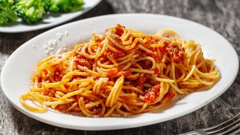

Pasta
I personally consider pasta to be the best food in the world, but of course,
that's just my opinion.
Ingredients
- 500 g screw or fidelinho pasta
- 2 liters of water
- 1 spoon of salt
- 1 tablespoon of oil
- 1 tomato
- 1 chopped onion
- pepper
Steps
- Put the water to boil
- When it is boiling, add the salt and 1 tablespoon of oil.
- When the pasta is soft, remove it from the heat and drain the water in the pasta colander.
- Wash the pasta.
- Make the sauce of your choice in another pan.
- Place the margarine, tomato, onion and pepper in a pan
- Saute and add a spoonful of salt.
- Add the pasta.
- If you want, you can add tomato paste.
- Mix and serve with grated cheese.
Home